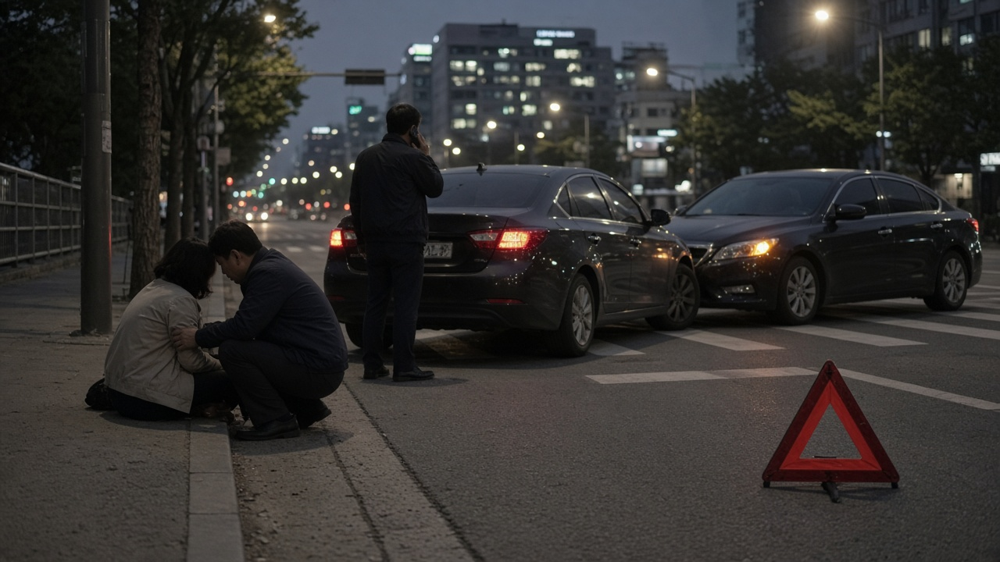
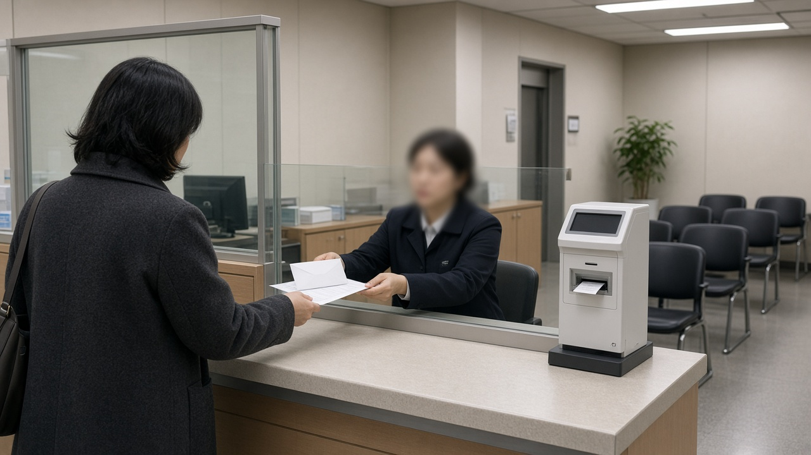
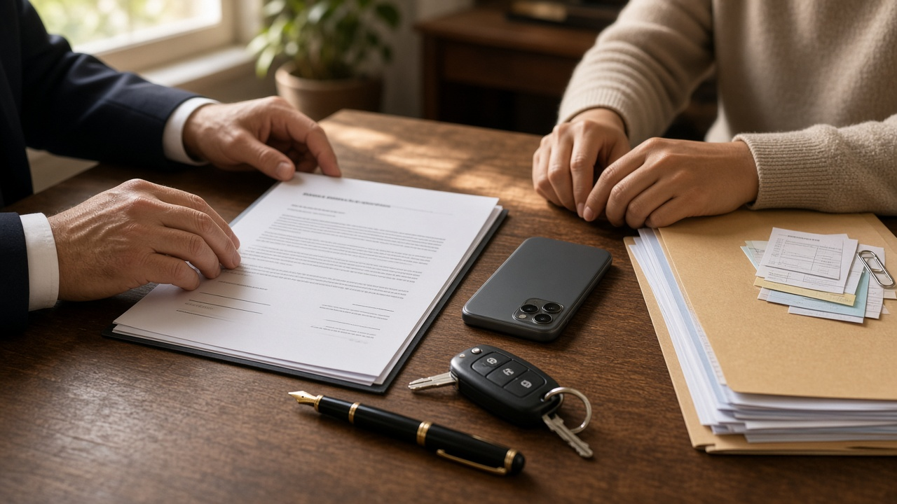

교통사고 피해자가 합의를 거부할 때 형사공탁, 7월 양형기준 바뀐 뒤 감형 효과는 어떻게 달라졌나

교통사고로 사람이 다쳤는데 피해자가 연락을 받지 않거나 합의 금액에서 도저히 접점이 안 보이면 많은 분들이 형사공탁 이야기를 듣게 돼요. 돈을 법원에 맡겨 두면 합의한 것처럼 처리된다고 알고 계신 경우도 있는데, 올해 7월부터 이 부분이 꽤 달라졌어요. 오늘은 공탁이 어떤 사고에서 문제가 되는지, 바뀐 양형기준이 무엇을 바꿨는지, 그리고 실제로 어떤 순서로 움직이면 좋은지 차근차근 정리해 볼게요.
종합보험이 있어도 형사합의가 필요한 사고
먼저 짚어야 할 점은 대부분의 접촉사고는 형사공탁까지 갈 일이 없다는 거예요. 교통사고처리 특례법 제3조와 제4조에 따라 일반 과실로 사람을 다치게 한 경우, 피해자가 처벌을 원하지 않거나 차가 종합보험이나 공제에 가입돼 있으면 원칙적으로 공소를 제기할 수 없거든요.
문제는 예외에 걸릴 때예요. 신호 위반, 중앙선 침범, 제한속도 시속 20킬로미터 초과, 앞지르기와 끼어들기 위반, 철길건널목 통과방법 위반, 횡단보도 보행자 보호의무 위반, 무면허, 음주나 약물 운전, 보도 침범, 승객 추락방지의무 위반, 어린이 보호구역 안전의무 위반, 화물 낙하방지 조치 위반까지 법에 적힌 12가지 사유로 사고를 냈다면 종합보험이 있어도 기소될 수 있어요.
여기에 구호조치 없이 도주한 경우, 음주측정을 거부하거나 방해한 경우, 피해자가 생명에 위험이 생기거나 불구 또는 불치나 난치의 병을 얻는 중상해를 입은 경우, 보험계약이 무효나 해지, 면책으로 보험금 지급의무가 없어진 경우도 마찬가지예요. 이런 사고에서는 보험 처리와 별개로 형사 절차가 진행되니 피해자와의 합의가 처벌 수위에 큰 영향을 줍니다.

형사공탁이란 무엇이고 누구에게 쓰이나
공탁은 갚을 돈을 법원 공탁소에 맡겨 두는 제도예요. 예전에는 공탁을 하려면 피해자 이름과 주소를 알아야 해서, 피해자가 연락을 끊으면 사실상 방법이 없었어요.
지금은 공탁법 제5조의2 형사공탁 특례 덕분에 피해자 인적사항을 몰라도 공탁할 수 있어요. 사건이 진행 중인 법원 소재지 공탁소에 내고, 공탁서에는 피해자 이름 대신 법원, 사건번호, 사건명, 공소장이나 조서에 적힌 피해자를 특정할 수 있는 명칭을 적는 방식이에요. 피해자에게 따로 연락하지 않아도 되기 때문에 2차 피해를 줄이려는 취지도 담겨 있어요.
다만 공탁에는 피해자의 처벌불원 의사가 들어 있지 않아요. 그래서 공탁을 했다고 해서 합의서를 받은 것과 같은 효과가 나는 것은 아니라는 점을 꼭 기억해 두셔야 해요.
7월 1일부터 달라진 양형기준의 핵심
대법원 양형위원회는 35개 양형기준을 고쳐서 2026년 7월 1일 이후 공소가 제기된 사건부터 적용하고 있어요. 가장 큰 변화는 감경 요소로 적혀 있던 실질적 피해 회복과 상당한 피해 회복 항목에서 공탁 포함이라는 문구를 지운 거예요.
쉽게 말하면 돈을 공탁했다는 사실만으로 피해가 회복됐다고 자동으로 인정하지 않겠다는 뜻이에요. 그렇다고 공탁이 아예 무시되는 건 아니고, 피해자의 의견, 피고인이 공탁금을 다시 찾아갈 수 있는지와 그럴 의사가 있는지, 피해의 성격과 규모를 함께 따져서 사건마다 판단하게 됐어요.
이보다 앞서 2024년에는 형사소송법이 바뀌어 공탁이 있으면 법원이 선고 전에 피해자 쪽 의견을 듣도록 했고, 공탁법도 일정한 요건 없이는 피고인이 공탁금을 회수하지 못하도록 손질됐어요. 재판 막바지에 기습적으로 공탁하고 감형을 노리는 방식이 점점 통하기 어려워진 흐름이라고 보시면 돼요.

피해자가 수령을 거부하면 어떻게 되나
피해자가 공탁금 받기를 거부하고 엄벌을 원한다고 밝히면 새 기준에서는 감경 효과가 제한될 가능성이 커요. 다만 7월 이전에 기소된 사건에서는 유족이 수령을 거부했는데도 공탁 사실을 일부 참작한 판결이 보도되기도 했어요. 기준이 바뀐 뒤 법원이 구체적으로 어떻게 평가할지는 앞으로의 판결로 더 분명해질 부분이에요.
피해자 입장에서 알아 둘 점도 있어요. 재판 중에 수령을 거부했더라도 형이 확정된 뒤 공탁금을 찾아갈 수 있다는 보도가 있었어요. 반면 피고인은 피해자가 회수에 동의하거나 공탁소에 수령 거절을 통고하는 등 법에서 정한 사유가 없으면 돌려받기 어려워요. 재판에서 밝힌 거부 의사와 공탁소에 하는 수령 거절 통고는 별개의 절차라서, 어느 쪽이든 정확한 효과는 담당 법원이나 공탁소에 확인하는 것이 안전해요.
운전자가 기억할 대응 순서
첫째로 사고 직후에는 부상자 확인과 구호, 신고가 무엇보다 먼저예요. 이 단계를 놓치면 단순 과실 사고가 도주 사고로 바뀌어 처벌이 훨씬 무거워질 수 있어요.
그다음 내 사고가 12가지 예외나 중상해에 해당하는지부터 확인하세요. 해당하지 않는 일반 과실 사고라면 대개 종합보험 처리로 마무리되고, 해당한다면 형사 절차를 염두에 두고 움직여야 해요.
합의가 필요하다면 진단과 치료 경과가 어느 정도 보인 뒤 처벌불원 의사까지 담은 합의를 먼저 시도하는 것이 순서예요. 합의서에는 처벌불원 여부, 민사 손해배상과의 관계를 분명히 적어 두어야 나중 분쟁을 줄일 수 있어요.
합의가 끝내 어렵다면 공탁은 보완 수단으로 생각하고, 변론이 끝나기 전에 여유 있게 진행하는 편이 낫다는 것이 법조계 설명이에요. 금액에 정해진 표는 없고 부상 정도, 치료비와 소득 손실, 과실 비율, 형사 위험의 크기에 따라 달라지니 사건이 복잡하다면 변호사나 대한법률구조공단 같은 공공 상담 창구에서 내 사건에 맞는 조언을 받아 보시길 권해요. 오늘 내용은 10월 27일 기준 법령과 보도를 바탕으로 정리한 일반 정보예요.
참고 자료 교통사고처리 특례법 제3조와 제4조, 공탁법 제5조의2, 찾기쉬운 생활법령정보 교통사고 발생시 형사처벌과 합의금 공탁, 대법원 양형위원회 피해 회복 관련 수정 양형기준 관련 보도, 파이낸셜뉴스 2026년 8월 8일 형사공탁 보도
태그 형사공탁 교통사고합의금 형사합의 교통사고처리특례법 12대중과실 양형기준 처벌불원서 교통사고형사처벌 공탁금 중상해사고